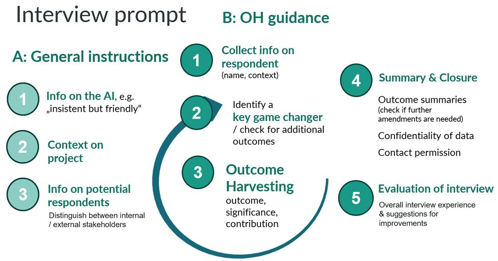

DEZIM book chapter
Title: The role of AI-driven interviewers in evaluating and promoting democratic processes(#_msocom_1) (#_msocom_2) (#_msocom_3)
Draft 2: 01.10.2025
Kornelia Rassmann1, Steve Powell2, Gabriele Caldas Cabral2, Birgit Müllegger1,3
1: Independent Consultant; 2: Causal Map Ltd.; 3: KLAR! Programme Bad Ischl-Ebensee
Keywords: Artificial Intelligence, AI interviewer, Ethical AI, Qualitative Evaluation, Outcome Harvesting, Democracy, Climate Change Adaptation
1. Abstract (#_msocom_4)#
This chapter explores the use of an Artificial Intelligence (AI) interviewer, the “Harvest Assistant,” in Outcome Harvesting (OH) to strengthen democratic evaluation. OH, widely used to capture behavioural changes in complex contexts, is rigorous but resource-intensive. A pilot was conducted with Austria’s KLAR! climate change adaptation programme: we tested whether an AI tool built on the Qualia platform using Gemini 2.5 Pro could replicate key tasks of a human “harvester”: eliciting narratives, framing them as behavioural outcomes, and validating them with participants. Of 39 invited stakeholders, 19 responded, producing 38 Outcome Statements. Six met OH’s SMART criteria (#_msocom_5) while the rest served as leads for follow-up. Respondents generally found the AI interviewer trustworthy, adaptive, and easy to use. Real-time summaries increased transparency and gave participants ownership of how their contributions were being recorded. The pilot shows that AI interviewers can scale qualitative, participatory evaluation cost-effectively while broadening reach and inclusion. To match this scale, analysis must scale too: again, AI proved essential in closing the gap between more voices and structured, decision-ready outcomes. Yet human oversight remains vital for validation, ethical safeguards, and sensemaking. We propose a hybrid model: AI for scale and efficiency, humans for evaluative judgement, dialogue, and equity – positioning AI not as a substitute but a dedicated collaborator to enhance participatory, democratic evaluation.
2. AI meets evaluation for democracy#
In an era of rising political polarisation and pressure on democratic institutions, the need for public participation, transparency, and accountability is acute. Evaluations – especially participatory, user-oriented approaches – can be vehicles of democracy, upholding its core values, fostering citizen engagement, informing policy decision-making and legitimacy. In democracies, citizens’ values count, yet the meanings of fairness, dignity, well-being, and acceptable risk are negotiated in everyday life, not fixed (Berger/Luckmann 1966: Ch.1). Participatory inquiry is therefore not a courtesy but a condition, ensuring that what counts as “evidence” reflects lived experience. Further, if evaluations are to be democratic, i.e., participatory, inclusive, and empowering, they must go beyond collecting data from people within expert-defined frames. Participants should co-create the structures of measurement and interpretation, shaping questions, data, categories, and sensemaking, so that findings remain intelligible, realistic and actionable to those affected. At the same time, evaluations must be rigorous enough to deliver credible answers to pre-set questions. Yet, balancing rigour with participation remains challenging in complexity-aware, qualitative evaluation (Apgar et al. 2024: 17; Aston et al. 2021: 15).
AI can ease this rigour-participation tension. We recognise that, used without guardrails, AI can also intensify disinformation, exclusion, and bias – risks well documented(#_ftn1). Here, we assess its potential to broaden access and strengthen participatory, transparent practice at scale, while maintaining rigour and reducing costs. Paired with complexity-aware evaluation approaches such as Outcome Harvesting (OH), AI-supported, partially automated data collection and analysis can deliver processes that are both rigorous and inclusive. The aim is not efficiency alone but better alignment of policy with citizens’ needs and values, underpinned by traceable, reproducible, context-sensitive evidence.
This chapter draws on a study piloting an AI interviewer in an OH evaluation of climate-change adaptation in two Austrian municipalities – Bad Ischl and Ebensee – within the national “Climate Change Adaptation Model Regions for Austria” (KLAR!) programme.
2.1 Outcome Harvesting – a participatory approach to evaluation#
OH is a monitoring and evaluation approach designed for complex and dynamic environments where social change is often non-linear and difficult to predict (Wilson-Grau 2018; Wilson-Grau/Britt 2013) (#_ftn2). It is an actor-centred approach where outcomes are defined as observable changes in behaviour, relationships, policies, or practice in individuals, groups, organisations or institutions. Unlike traditional evaluation approaches that rely on pre-defined indicators or logic models, OH starts with observed changes and then works backwards to understand what contributed to these outcomes. OH follows a formalized way of how to draft the resulting outcomes: at the core are three major narratives – the outcome, the significance and the contribution descriptions – which together make up an individual “Outcome Statement” (Box 1). Thus, to serve as evidence, an Outcome Statement has to describe a specific, verifiable change in behaviour, clearly stating i) who changed what, when, and where; ii) why this change is significant, and iii) how the intervention plausibly contributed to it. This ensures that the outcome is Specific, Measurable, Achieved, Relevant, and Timely (SMART) in line with Ricardo Wilson-Grau’s OH criteria(#_ftn3).
| Box 1: Example of a SMART Outcome Statement Outcome: In March 2025, Konstanze Nußbaumer, a biology teacher at the Ebensee Sports Secondary School, reshaped her second-grade teaching by embedding ecological themes and outdoor learning as core practice. With her class (22 pupils), she applied three fieldwork methods in test areas along the upper Rindbach stream to identify and eradicate invasive alien plants such as Japanese knotweed, thereby strengthening biodiversity management and raising awareness of climate change impacts. The first two outdoor sessions took place in March and June 2025. Four action days were scheduled for the next two school years, plus a public vernissage in the fourth and last grade for this class. By balancing classroom learning with hands-on ecological work, ecosystem resilience and climate adaptation were firmly placed on the school’s agenda until at least June 2027. Significance: The hands-on engagement in invasive alien plants control directly contributes to ecosystem resilience and biodiversity protection, and shows how schools can act as multipliers for climate change adaptation. The new teaching approach strengthened pupils’ ecological knowledge and their ability to understand complex interrelationships in nature. Beyond knowledge acquisition, students developed hands-on competences in invasive alien plants control and habitat management, skills with real-world applicability. Embedding the approach across several school years ensures continuity and long-term learning, making it more impactful than isolated project days. The initiative serves as a model for colleagues, encouraging cross-curricular collaboration and gradually influencing the school’s pedagogical culture towards environmental learning at the school. Also, it is expected that students will transfer knowledge to their families, raising awareness and encouraging sustainable practices in their local environment. Contribution: KLAR! was instrumental in conceptualising, financing and supporting the implementation of the invasive alien plants action days in Rindbach, working closely with all stakeholders. The concept was developed in autumn 2024 by Birgit Müllegger, the KLAR! manager for Bad Ischl-Ebensee, who also took charge of the overall organisation: coordinating partners, scheduling outdoor sessions, and providing equipment. The initiative brought together the secondary school of Ebensee, the municipality of Ebensee, the Federal Forestry Office (which supplied an excavator and personnel), and the Nature Conservation Union. An invasives specialist helped to select the three test areas in the upper section of the Rindbach stream. When they were cleared on the first day, the volunteer fire brigade handled the disposal of the material. KLAR! will continue to organise, fund, and promote the initiative, including the 2027 vernissage that will showcase the project with pictures from the local Photo Club under active involvement of the final-year pupils. |
What sets OH apart is its participatory and inductive nature: as an actor-centred approach, it values the perspectives of multiple stakeholders and seeks to include diverse voices. To achieve this, OH follows a stepwise process, often beginning with a review of existing documents such as monitoring or annual reports, followed by interviews with programme implementers (change agents) to identify relevant behavioural changes. The outcomes generated at this stage may not yet be fully SMART, yet, as initial “outcome leads” they are valuable for framing relevant domains of change worth exploring in more depth. In the next step OH then incorporates additional stakeholders, also including partners or external actors, whose perspectives help to clarify, deepen, and sometimes challenge the initial findings. This iterative, “snowball” sampling and reviewing of the narratives helps to refine the existing Outcome Statements and uncover new ones.
OH invites stakeholders, including those closest to the change, such as citizens, community members, and civil society actors, not only to report on outcomes but to help interpret their significance. Rather than measuring success against externally defined metrics, OH also encourages contextual sensemaking, which requires a deep engagement with the perspectives of stakeholders. OH is therefore well-suited to address the democratic tension in evaluation: it allows for the co-creation of categories and interpretations, instead of merely collecting data within fixed, top-down frameworks.
Yet, OH faces real-world constraints. Involving stakeholders meaningfully in identifying and interpreting outcomes typically requires a substantial number of in-depth interviews, focus groups, or workshops. The iterative process is time-consuming, often taking several rounds of engagement to make an Outcome Statement sufficiently specific, plausible and hence credible. OH also depends on skilled facilitators (“harvesters”) to guide the process effectively and ethically, ensuring that stakeholder voices are heard, respected, accurately captured and, where possible, actively engaged in the drafting of Outcome Statements. Furthermore, the approach involves coding, synthesis, and validation of the narrative data, which can be both labour-intensive and analytically complex, especially when working across large or diverse datasets from multiple regions, languages and stakeholder groups. As the scale of an evaluation grows, so do the logistical and financial burdens. This is where using AI can be beneficial in the OH process.
2.2 AI interviewers: promise and pitfalls#
Scaling through AI interviewers. AI interviewers can enhance the democratic potential of evaluations in several ways. Through automation, they can engage large samples with far fewer resources than human-led interviews, making participatory data collection cost-effective at scale. Unlike rigid surveys, they behave more like a human “harvester”: adapting to each response, asking context-aware follow-ups, and generating rich narratives, which is especially valuable for approaches like OH. This scalability means more voices from the ground can be heard, widening representation and increasing the chances to reveal unanticipated outcomes. Further, an AI’s multilingual capability lowers language barriers, and voice-based interfaces can remove literacy hurdles. This opens up participation(#_msocom_6) (#_msocom_7) to groups often excluded by text-only surveys, including vulnerable communities. Hence, AI interviewers hold the promise to broaden participation and deepen insight, while maintaining the rigour and nuance of traditional qualitative evaluations.
Risks and concerns(#_msocom_8) . While AI can scale participatory qualitative approaches such as OH, several challenges must be addressed if it is to contribute meaningfully and ethically to democratic evaluation, including access, bias, trust, and data rights:
Digital divide and accessibility. AI interviews rely on digital infrastructure and connectivity, which excludes those without reliable internet, skills, or hardware, often rural communities, older people, and low-literacy groups. Voice-based mobile or low-tech options help but are not universal.
Bias and representation. AI tools are only as good as the data they are trained on. If datasets lack diversity or encode dominant norms, they can amplify bias, privileging some voices while marginalizing others. In OH interviews, where the interpretation of meaning is highly contextual, this can steer the conversational path and shape which outcomes are identified and how deeply they are probed. Whether such algorithmic bias is worse than human interviewer bias is an open question.
Trust and human presence. Human presence plays a crucial role in building trust in qualitative approaches such as OH. Power dynamics and emotional nuance remain hard for an AI to read but are essential to understand more complicated social contexts and establish credibility in qualitative evaluation (Azzam 2023: 92-94; Ray 2023: 148). Acceptance will vary across cultures, groups and even individuals, some may feel uneasy or surveilled, especially in politically sensitive settings.
Ethics and data rights. AI-powered evaluations raise significant ethical questions around data protection, consent, and privacy. Participants may not fully understand how their data is being used, stored, or analysed, especially when an AI transcribes and interprets responses in real time.
In light of the above, we piloted an AI interviewer in the OH assessment of the KLAR! programme to explore whether reach and inclusion can be expanded efficiently and effectively in democratic evaluations, while keeping a close eye on challenges and ways forward.
3. Setting and aims of the OH-AI pilot#
3.1 The KLAR! programme#
Launched in 2021, KLAR! Bad Ischl–Ebensee(#_ftn4) is one of Austria’s 91 climate-adaptation regions, which span in total 800+ municipalities and serve nearly 2.2 million residents. The national KLAR! programme is funded by the Austrian Climate and Energy Fund(#_ftn5) and supports municipalities both in raising public awareness of climate risks and in planning and implementing concrete, region-specific adaptation measures. KLAR! Bad Ischl-Ebensee introduced outcome monitoring in 2024 to document results, boost stakeholder involvement, and inform evidence-based decisions. OH was chosen to ensure diverse voices were included, and the AI approach was tested to expand inclusivity, increase the chance of capturing unanticipated outcomes, and to save costs. Framed as a participatory learning process throughout the project lifecycle ending in 2026, the OH project emphasises iterative planning and sensemaking sessions where stakeholders co-design the harvest process, jointly interpret outcomes and emerging patterns of change, thus offering a space for collective dialogue, ownership, and critical reflection.
3.2 Objectives of the pilot (#_msocom_9) (#_msocom_10)#
The pilot was conducted in 2024/2025 and explored the feasibility and added value of integrating AI into participatory evaluation, specifically in the context of OH, while also uncovering outcomes and actionable insights for KLAR!. The hope was that an AI interviewer, if successful, could expand especially the initial OH interview round, which typically draws on sources closely involved in the programme. Wider inclusion would increase detection of both expected and unexpected or emergent outcomes, advancing an inclusive, democratic evaluation. Specifically, we looked at four dimensions:
1. Participant experience and acceptance of the Harvest Assistant: A key question was whether participants would accept AI interviewers in real-world evaluations. Powell et al. (2025: 402) reported high engagement in an AI-assisted causal mapping study involving a short discussion around a single topic. The KLAR! OH-AI pilot tested whether similar acceptance could be achieved in a different cultural and linguistic context and with lengthier, more complex interviews. Beyond functionality, we were interested in the interpersonal qualities essential for OH, where interviewees often recount complex, personal, or politically sensitive processes of change, examining whether participants experienced the AI as trustworthy, respectful, and clear, and whether they were willing to share the detailed information required.
2. Overall functionality of the Harvest Assistant. The AI interviewer was designed to foster participant acceptance and ensure effective performance in an applied OH setting, with particular attention to three criteria:
i) Naturalness: Did the transcripts read as sufficiently natural, reflecting the tone, flow, and depth of a human-to-human interview?
ii) Completion: Was the AI able to maintain an open and conducive atmosphere? Were the Qualia-OH interviews carried out to completion, covering the intended scope of the OH interview guide?
iii) Adaptability: Could the AI adjust to an interviewee’s tone? Like a human harvester, it needed to shape follow-up questions around the conversation, capture emerging themes, and respect contextual relevance and inclusivity. Also, the AI had to tailor its approach to respondents’ level of involvement and knowledge of the KLAR! programme, e.g., asking internal stakeholders, such as the steering committee members, about changes linked to programme implementation, while adapting to pose more general questions to external stakeholders such as citizens about observed shifts in climate adaptation in their community. Could the Harvest Assistant differentiate between such internal and external stakeholders, adapting its questioning strategy accordingly?
3) Feasibility of an AI interviewer for OH, i.e. for the actual harvesting process: A central objective was to assess whether an AI could effectively conduct OH interviews, which requires eliciting formalised Outcome Statements (outcome, significance, contribution) – a nuanced task usually reliant on human judgment and adaptability. We examined four aspects of the KLAR! Harvest Assistant’s performance:
i) Identifying behavioural changes. Could the AI detect a key game changer attributable to the KLAR! programme and reframe initial, non-behavioural descriptions into behavioural terms (e.g., from “fewer invasive species” to “the municipality decided to remove invasive species”)?
ii) Gathering specific outcome information. Once a behavioural change was identified, could the AI probe with the sensitivity and adaptability of an experienced OH interviewer to elicit the rich and specific information required for a SMART Outcome Statement through persistent, adaptive questioning?
iii) Prompting for additional outcomes. Could the AI recognise when an Outcome Statement had been sufficiently well explored and then move on smoothly to elicit further outcomes? Could it balance thoroughness with sensitivity to the interviewee’s experience, maximising information while keeping the dialogue respectful and engaging?
iv) Summary and validation of outcomes. At the end of the interview, could the AI accurately summarise the outcomes and present them for immediate participant confirmation, ensuring data accuracy and validating its understanding of the information provided?
4. Usefulness of the AI interviewer for learning and democratic engagement. Our final and perhaps most important research question was whether data from AI-led interviews can address evaluation needs, inform programme decisions and strategies, and serve broader democratic aims.
i) Evaluation value. In line with OH’s utilisation-focused orientation, we asked whether the AI-generated outcomes were credible, decision-relevant and sufficiently contextualised to support evidence-based learning, reflection and decision-making in the KLAR! Bad Ischl-Ebensee programme. Specifically: did they provide a solid basis for participatory sensemaking, prompting discussion and guiding further sampling and inquiry; did they deliver practical value to programme managers, implementers, policymakers and community stakeholders?
ii) Democratic value. We also looked for early signs that the AI interviewer could widen scale and inclusion by reaching participants who might otherwise be missed, and whether it might raise awareness of KLAR!, improving the programme’s visibility and the transparency of its evaluation.
4. Building and implementing the “Harvest Assistant”#
In this section we first describe how we designed the platform and prompt for the KLAR! Harvest Assistant – our dedicated OH-AI interviewer for the KLAR! pilot. Then we describe the sampling approach and conclude with an overview of the analysis of the outcome data.
4.1 The Qualia platform#
The Harvest Assistant was designed using Qualia(#ftn6), a web-based platform provided by Causal Map Ltd. (Powell et al. 2025). Qualia’s chat-based AI interviewer adapts questions to context and scales conversational, open-ended data collection, well suited to OH’s need to gather rich narratives and probe causal links. It offers interview creators a web interface where they can configure and test their interview, such as ruling out multiple submissions or choosing the preferred Large Language Model (LLM). For the KLAR! _Harvest Assistant we selected Google’s Gemini 2.5 Pro (Preview), accessed via the Gemini Application Programming Interface (API) on Google Cloud. The AI interviewer is multilingual: prompts can be authored in one language, but the interviewer will switch automatically to the respondent’s language (alternatively, a fixed language can be selected in the settings). In our pilot, the prompt was in English, and the interviews were conducted in German. Outreach to the participants is easy: a web link or QR code to the specific AI interviewer is shared either anonymously or with per-respondent identifiers that allow tracking. Respondents need no ChatGPT or Qualia accounts, they simply open the link in any browser (desktop or mobile), type or use speech input and complete the interview at their convenience. Interviews can also be paused and continued later on the same device. Creators can monitor and download completed interviews as Word (.docx) or Excel (.xlsx) files.
Figure 1: The Qualia interviewer at the start of an interview.
4.2 Prompt engineering (#_msocom_11)#
The instructions we provided for the KLAR! Harvest Assistant resembled the OH guidelines for human interviewers, defining both structure and content of the interview. The Qualia platform allows interview creators to divide the interview into separate, hard-coded sections, each with a dedicated prompt. However, we chose to provide such guidance as a single prompt for our Harvest Assistant, tasking the AI with managing the whole interview from greeting to farewell. Generally, there is no guarantee that an AI interviewer will follow its instructions to the letter. Yet, from past experience we learned that simple, short and clear instructions are most likely to be followed accurately. Also, interviewers powered by more capable models (e.g., Gemini 2.5 Pro at the time of writing) are more likely to handle more complicated instructions correctly.
The prompt engineering process involved multiple refinement rounds to ensure that the Harvest Assistant could effectively elicit OH-relevant information. We tested a range of prompt variations with both AI and human interviewees, fine-tuning the AI to ensure it could effectively guide the conversation and generate rich and specific information. This iterative process drew on other studies discussing effective prompting techniques and AI interview protocols (Parker et al. 2023; Schulhoff et al. 2024). As Schulhoff et al. (2024: 4) say, “Empirically, better prompts lead to improved results across a wide range of tasks”.
The resulting prompt was organised into several modules to structure its interaction with the interview partners. Most notably, we differentiated between the Harvest Assistant’s general operating instructions and the prompts for the actual harvesting, tailored to guide distinct sections of the interview (Figure 2).

Figure 2: Overview on (A) the general instructions and (B) the OH modules of the KLAR! Harvest Assistant prompt.
General Qualia operating instructions.(#msocom_12) (#_msocom_13) This set of instructions prompted the _Harvest Assistant’s behaviour (friendly but insistent) and provided context on KLAR!, much like those which would be given to a human interviewer. A key element was recognising whether the respondent was an internal stakeholder familiar with the programme or an external one with limited knowledge. Conditional behaviours were defined accordingly, with instructions to identify the type of stakeholder and adapt questioning accordingly.
Prompt engineering for OH. The actual interview was then structured in five stages:
i) Respondent information. The AI first asked for the respondent’s name and their knowledge of or role in the KLAR! programme to distinguish between internal and external stakeholders.
ii) Identification of changes (iterative process). The core of the prompt engineering centred around guiding the AI through the actual OH process, which was designed to run in a loop to identify multiple outcomes. Initially, respondents were invited to describe a key game changer, encouraging them to frame significant changes in their own terms.
iii) Outcome Harvesting. Once a change was identified, the AI embarked on the typical OH questions: Who changed, how, when, and where; why did this matter; and who contributed. After exploring one outcome, it prompted for others, repeating the loop as needed.
iv) Summary and closure. Once respondents had no further changes to report, the AI produced brief “live” outcome summaries in OH format (outcome, significance, contribution; Box 2) for verification, asked about confidentiality, and requested consent for follow-up.
v) Evaluation of the AI interview. As a pilot, the Harvest Assistant concluded with questions about the respondent’s overall experience to assess user acceptance and identify improvements.
| Box 2: “Live” outcome summary presented to the respondent during the interview Starting in March 2025, teacher Konstanze Nußbaumer has changed the biology lessons for her 2nd grade at the Sports Secondary School Ebensee. She now increasingly conducts outdoor lessons in which the pupils deliberately clear neophytes. This change is important because it promotes the increase in knowledge and understanding of ecological relationships among the students. The idea and implementation of this project were made possible primarily through the KLAR! programme. Birgit Müllegger has developed the concept idea since autumn 2024 and taken over the entire organization, including networking of partners and provision of materials. Further important contributions came from the Austrian Federal Forests, the municipality of Ebensee, the voluntary fire brigade, and a voluntary initiative, which supported the implementation with equipment and material disposal. Without the KLAR! programme, this project would not have taken place. |
4.3 Sampling#
Sampling took place in August/September 2024 and June/July 2025. In total, 39 different internal and external stakeholders were invited, including local government officials, community leaders, citizens, and representatives from sectors affected by climate change (e.g., education, business, tourism, associations). The aim was to test the KLAR! Harvest Assistant across diverse backgrounds and perspectives relevant to programme outcomes. Invitations were sent by the KLAR! programme manager via email with a unique link to the Qualia AI interview platform, and in some cases followed up via WhatsApp. Of the 39 stakeholders invited, 18 fully or almost completed the AI-assisted interviews, one participated partially. The transcripts of the interviews downloaded from the Qualia platform comprised each between two and eleven A4 pages in length, combined 114 pages (c. 30600 words).
Data protection. All participants were informed about the purpose of the study, the voluntary nature of their participation, and their right to withdraw at any time. Consent was obtained before the interview started. Data was stored in compliance with General Data Protection Regulation (GDPR), ensuring that personal data was processed lawfully, fairly, and transparently.
4.4 Data analysis#
A two-step process was used to derive SMART Outcome Statements from the interview data: First, an AI-driven analysis of each interview produced a consolidated table of Outcome Statements including also basic outcome categorisations and interview meta data. Second, human validation assessed the accuracy, duplications, and conformity of Outcome Statements to OH criteria. Both steps are detailed below.
AI-generated table with Outcome Statements. We built a custom GPT (GPT-5 Thinking) on OpenAI’s ChatGPT platform to review the full interviews and recover details that might have been missed in the “live” summaries. To minimise omissions and hallucinations, transcripts were processed one by one, and the model was instructed to use the entire transcript, never previews. The instructions followed a strict stepwise workflow: the model collected metadata on the interview (e.g., name of respondent, time and length of interview), mapped all actors mentioned, and assessed whether each had changed behaviour. Then it crafted the respective outcome, significance, and contribution narratives with precise who/what/when/where, and provided a basic categorisation (type of actor and change, time of outcome emergence, location, etc.). To ensure traceability, it provided verbatim 15-word citations with page references to the relevant transcript sections. It also indicated what details were still missing for the outcome to meet SMART criteria. The quality of this analysis was enforced through an explicit rubric, self-evaluation, and iterative improvement to 10/10. The outputs were consolidated, currently via manual copy-paste, into a single Excel table (automation planned). The result was an OH database with 56 rows, each representing an Outcome Statement (Box 3).
| Box 3: Outcome Statement, selected meta data and categorisation from the AI-analysis | |
| Outcome# | P2-ID37-OC01 |
| Outcome | In March 2025, biology teacher Konstanze Nußbaumer at Sport Secondary School Ebensee began to reform her lessons for 2nd grade: She strengthened the focus on ecology and introduced more outdoor teaching sessions, where the class conducts targeted Neophyte eradication. The change affects the teaching practice (planning, method mix, learning outside) and anchors practical ecological work into everyday school life in Ebensee. |
| Significance | The change strengthens pupil’s knowledge gains and their understanding of ecological relationships linking teaching with concrete action competencies (invasive species control). By embedding it as a curricular teaching practice__, sustainability is higher than with one-time activities; additionally, the topic’s visibility within the school community can increase. |
| Contribution | KLAR! enabled the idea and implementation. Birgit Müllegger developed from autumn 2024 the concept idea, took over overall organization, networking of all involved, schedule management as well as provision of necessary work equipment. The Municipality of Ebensee provided preliminary work/work equipment; Federal Forests and volunteer initiative participated in the project day/eradication; the voluntary fire brigade took over material disposal. Thus a coordinated setting emerged which, from March 2025, enabled the new teaching practice. |
| Reference in interview | “She now conducts increasingly outdoor lessons, where the students specifically clear neophytes.” (P2-ID37, p5). Additionally: “2025, March” (P2-ID37, p2). |
| Information missing | Number of the participating students; frequency/anchoring in the annual plan; precise location of the clearings; extent/duration of the outdoor sessions; whether continuation in upcoming school years is planned; more precise roles of the Federal Forests. |
| Type of actor | Educator |
| Type of change | Change in ecological teaching practice |
| Location | Ebensee |
Human in the loop. (#msocom_14) (#_msocom_15) A trained OH harvester then assessed each AI-generated row, verifying the accuracy of the extracted information from the interviews. The review confirmed that _no hallucinations had occurred with respect to hard facts, every element could be traced back to the source interview. Still, in some narratives the AI-analysis added brief summaries or interpretive phrasing. Examples of this are shown in Box 3 in italics. For this study, we deliberately did not instruct the AI to be more strictly fact-bound, as such summaries may prove useful in the next OH step, when outcomes are revisited and refined together with the informant and other sources.
The human analysis also identified duplicate changes, where the same actor and behavioural shift had been extracted from multiple interviews. One example (“Increased public climate adaptation awareness in Bad Ischl citizens”) was reported by three interviewees, six further outcomes were each mentioned by two different sources. This repetition was valuable in itself: it not only reinforced the credibility of the reported changes but also provided multiple perspectives on the same shift. While such overlap strengthened the evidence through triangulation, the duplicates were counted as one result, reducing the number of Outcome Statements to 48.
Next, each statement was scrutinised against the OH criteria. Specifically, we checked whether sufficient information was available to make the Outcome Statement SMART (guided also by the AI’s own “missing details” suggestions) and whether outcome and contribution narratives were plausibly linked. As occasionally seen in conventional OH, some reported changes did not qualify as genuine behavioural changes or were not plausibly connected to the KLAR! programme but other climate initiatives, which eliminated 10 rows. Of the remaining 38 Outcome Statements, six were sufficiently specific to qualify as SMART, 32 were retained as outcome leads for further investigation through AI- or human-led interviews.
5. What we learned#
Below we summarise our learnings from piloting the KLAR! Harvest Assistant in line with the four objectives outlined in section 3.2(#_msocom_16) : participant acceptance, the AI’s functionality, its feasibility for OH, and its practical value for evaluation and democratic engagement.
5.1 Participant experience and acceptance#
General acceptance. Asked about their interview experience, most responded positively, noting ease of use and overall satisfaction. Thirteen of 17 who answered this question explicitly described the AI interviewer as pleasant and enjoyable (“It works, it’s good”; “Thank you, it was really fun writing with you.”); one was “quite impressed by the conclusions drawn and the summaries.” At the same time, some offered critical reflections, finding the interview somewhat artificial, repetitive or lengthy. While this may reflect a broader scepticism toward AI, such feedback underscores the need to fine-tune the interviewer’s style, balancing friendliness with persistence and avoiding mechanical repetition, especially for OH, which by nature digs deep for detail.
Trust and willingness to share information. The respondents showed clear willingness to share detailed information, as evidenced by their cooperation and consent for further follow-up. The AI was generally seen as trustworthy for open engagement; no respondents raised privacy or data handling concerns regarding the observations they shared, although some declined to provide third party contact information.
5.2 Functionality of the AI interviewer#
Stakeholder-sensitive interviews. The respondents ranged from political representatives directly engaged in the KLAR! steering committee, to operational staff and citizens with little prior knowledge of the programme. The Harvest Assistant tailored its approach accordingly, eliciting relevant information while respecting each person’s role and knowledge. For instance, it avoided pressing residents on internal programme details, thereby maintaining engagement and comfort throughout the interview.
Naturalness. (#_msocom_17) (#_msocom_18) Overall, the interviews read as sufficiently natural, reflecting the tone, rhythm, and substance of typical human-to-human exchanges. The Qualia platform did not at the time record whether the interviews were conducted orally or in writing, but judging by the presence of typos and abbreviations we assume that most were written. Some respondents used short, stenographic sentences, yet the conversation flowed logically, with smooth transitions between questions. Throughout, the AI maintained a consistent and polite tone, which seemed to put respondents at ease and likely contributed to their high level of engagement.
Completion and engagement. Of the 19 respondents, 18 fully or almost completed the AI-assisted interviews, one participated only partially. In two cases, the interview ended before the AI could present an outcome summary. Overall, most participants stayed engaged and aimed to complete the process, seven even completed two OH cycles, reporting two changes. The interviews lasted on average 30 minutes, ranging between 6 to 70 minutes, not including three cases where the respondents paused for several hours before resuming. Other participants also appeared to take shorter breaks. This flexibility to pause and continue likely enhanced the overall experience and helped sustain engagement. Prior studies also note that chat-based, interactive AI interviewers, when thoughtfully paced, non-judgmental, and giving users a sense of control, can enhance convenience and a positive, open atmosphere (Chopra et al. 2023; Geiecke/Jaravel 2024).
5.3 Feasibility of the AI interviewer for OH#
Identifying and framing behavioural changes through the Harvest Assistant. A crucial test was whether the AI interviewer could accurately identify meaningful changes related to the KLAR! Bad Ischl-Ebensee programme and, together with the interviewees, frame these as behavioural outcomes. Typically, this process requires considerable skills and programme-specific knowledge from human harvesters, who must be trained to recognise behavioural shifts and draft them in OH format. In this pilot, the KLAR! Harvest Assistant performed notably well. In each AI interview, one or two key changes were identified, researched in depth, and summarised, resulting in a total of 24 “live” outcome summaries that could be confirmed on the fly by the respondents.
At times, several types of actors were mentioned in one outcome summary (e.g., “politicians and citizens show increased awareness of climate change”); or additional actors were mentioned during the interviews without further exploration of whether they, too, had changed. For example, the pupils mentioned in Box 1 were likely influenced in specific ways through the invasive alien plants initiative, yet the AI interviewer did not pursue this line, remaining focused on the change of the teacher. A human interviewer might have probed more persistently, circling back to such hints later in the interview and reframing them into outcomes. The AI seemed more restrained, perhaps seeking to balance deeper probing with keeping participants engaged. Even so, these additional actors were identified in the subsequent AI analysis of the transcripts and flagged as outcome leads for further inquiry in the next phase.
Gathering sufficient specific information.(#msocom_19) (#_msocom_20) After human review, only six of 38 AI-generated Outcome Statements met the strict OH SMART criteria, spelling out who exactly changed, and who contributed to this change, how, when, and where. The other 32 cases lacked key detail or a clear link to KLAR!. Some gaps may be due to the interviewee’s limited knowledge of further details. Yet, at least in one interview, the AI rushed to the next OH cycle probing for a second outcome without ensuring the first was fully explored, suggesting that there may be room for improving the prompt. That said, even experienced human harvesters don’t necessarily expect fully SMART Outcome Statements from a first OH interview. OH is an iterative process in which outcomes are reviewed, verified, and refined across sources. With this in mind, six SMART outcomes and 32 leads from simply sending out the _Harvest Assistant link, followed by a fast AI-analysis of the downloaded interviews, is a very satisfactory yield.
Harvesting for additional outcomes. After discussing one outcome, respondents were invited to reflect on other relevant changes. The Harvest Assistant generally handled the timing and transition well, using polite, open prompts and carefully looping back through the OH process to keep participants engaged and responsive. This encouraged seven of the 19 interviewees to share a second outcome. Hence, overall, the AI balanced thoroughness with participant’s ease across the complete conversation, though as described above, in one case the pacing suggested some fine-tuning.
Outcome summary and validation. A key strength of the Harvest Assistant was the real-time summarisation: at the close of each interview, the AI produced a concise outcome summary in OH format and invited immediate confirmation. All interviewees agreed they were accurate, with one rating theirs “almost correct”, and one even being “impressed” by the AI’s takeaways. This step aligns well with OH’s collaborative approach to outcome drafting, validation and sensemaking, and enhances transparency by letting respondents review what is recorded as an outcome. Also, this can greatly increase efficiency by cutting post-interview processing and clarification cycles typically involving multiple back-and-forth edits.
5.4 Usefulness for evaluation and democratic engagement#
Above we show that the AI interviewer and subsequent AI-supported analysis produced relevant, clearly articulated, and interpretable accounts of change. Here we discuss the value of the process and outputs for evaluation, strategic learning, and democratic practice in a KLAR! programme.
Evaluation value and strategic learning. The KLAR! OH database, resulting from the AI- interviews and AI-analyses consisted of a single table with columns for metadata on the interview, fields for outcome, significance and contribution descriptions, basic tags (e.g., actor type, location), references to interview sections, and prompts on missing information for the next round of OH interviews. This OH database made it easy to spot duplicates and cluster related outcomes into thematic domains. It proved very useful when prioritising promising leads together with the KLAR! Bad Ischl-Ebensee programme manager and to pinpoint evidence gaps. Targeted follow-up interviews have verified details and filled gaps for priority leads, refining them into fully SMART Outcome Statements. An initial workshop with the KLAR! Bad Ischl-Ebensee steering committee already generated further learning: the members linked outcomes to their actions and recognised the influence of their strategies. It is, however, too early in the OH project to say to what extent the findings will influence the next phase of KLAR! planning.
Scalability and public engagement. Human-led OH interviews are time-intensive and often a bottleneck in evaluations. The Harvest Assistant clearly helped ease this constraint: sending the AI interviewer link and running the AI-analysis together took perhaps 15 min, demonstrating the potential for scaling early outreach for outcome leads. Chopra and Haaland (2023: 1) also showed that AI-assisted interviewing can “retain the depth of traditional qualitative research while enabling large-scale, cost-effective data collection,” addressing the classic concerns of “limited scalability, high costs, and low generalizability.” In the KLAR! OH study, we could not have interviewed this many people so quickly with the human resources available. We are now further along than expected, with a substantial OH database of outcome leads, some already SMART, and including the voices of people less directly involved in the programme. This is unusual for the early phase of OH, which focuses more strictly on the change agents rather than external societal actors, so this helped us to widen the range of voices on local climate adaptation from the start and prioritise subsequent sampling accordingly. Further, by validating the “live” outcome summaries in real time, the process fostered an element of participatory verification. The respondents could immediately see and comment on how their inputs were captured and used, creating a small but important space for ownership and reflection, both central to democratic engagement and learning. It is too soon to judge effects on policymaking, mobilisation, or institutional responsiveness in the KLAR! programme, but the building blocks for more inclusive dialogue are in place. Future analyses will show whether AI-supported OH will lead to broader democratic processes by scaling-up dialogue, collective reflection, and feedback into local decision-making.
6. From pilot to practice: so what, now what#
AI-assisted interviews, as used in this pilot, already show strong promise for participatory evaluations in democratic contexts. Future developments will make platforms like Qualia even more intuitive, accessible, and responsive to a wider range of users. Below we highlight our takeaways and considerations for a future agenda in three areas: technical considerations, key risks and challenges, and AI in evaluation for democracy.
6.1 Technical considerations of scaling#
Flexibility of the tool and participation. AI interviewers automate time-intensive steps: the scheduling and conducting of long interviews, producing respondent-validated summaries and generating structured transcripts, thereby substantially reducing evaluator workload. Beyond this, the pilot confirmed that AI interviewers such as Qualia can expand the reach of narrative-based evaluations like OH by lowering barriers to participation. Respondents were able to take part outside conventional office hours, pause and resume later, and choose between written input or speech-to-text, features that increase flexibility and respect the preferences of the respondents. Looking ahead, emphasising multilingual and multimodal capacities – e.g., offering not only speech-to-text but enabling the AI to speak with respondents like in a real interview – will be critical, to further increase accessibility and thus minimize exclusion.
Prompt design, adaptive questioning and rigour. Adaptive questioning enabled the AI to elicit richer and more nuanced responses than conventional surveys, while maintaining focus on the evaluation aims and generating results sufficient to draft outcomes in OH’s formal, rigorous format. Prior work likewise finds that conversational systems which adjust to respondents’ inputs capture deeper narrative detail than rigid surveys (Chopra/Haaland 2023: 22; Geiecke/Jaravel 2024: 24). In our pilot, carefully crafted prompts proved critical: overly polite or generic wording caused the AI interviewer to stop probing early, whereas more precisely designed prompts led to outcomes remarkably similar to those produced by skilled human harvesters. Going forward, our conclusions for effective and robust prompt engineering include:
· Design for depth: encode escalation “ladders” as in OH (who changed, how, when, where; significance, contribution) and persistence rules (e.g., “ask up to N targeted follow-ups before moving on”).
· Build safeguards against bias or premature cut-offs: pay particular attention to where prompts may discourage deeper probing or sideline sensitive topics.
· Iterate and monitor: test on sample interviews, evaluate, and refine; track conversational depth/coherence and human-AI agreement on results, revise where the AI underperforms.
· Ensure linguistic/multilingual robustness: validate prompts in respondents’ language.
· Version both model and prompt: track which model and version, and which prompt was used in each interview so that results can be compared over time and across contexts.
Such controls enable teams to leverage adaptive questioning while keeping the process reproducible, auditable, and consistently rigorous across sources, languages, and time.
Scaling post-interview analysis and integration. AI interviewers can markedly reduce data collection workload, but if analysis doesn’t scale, the bottleneck simply shifts. Teams need scalable workflows for interview re-analysis (to capture changes missed in the summaries), synthesis and database construction, with downstream automation and clear review paths, or the volume will overwhelm them. Qualia offers several analysis features, but they don’t support building the OH database described here. In our pilot, the custom ChatGPT bot substantially accelerated drafting structured outcome tables. Looking ahead, integrated platforms will couple collection and analysis, linking interviewing with on-the-fly outcome drafting, clustering, thematic synthesis, and ideally visualisation of outcome domains and maps, so that evaluators and programme managers can spot patterns in near real time and accelerate interpretation and insight.
6.2 Responsible scaling#
Policy, security and data protection. OH is inherently data-driven: interviews ideally record the names of actors and other third parties to enable follow-up and triangulation of perspectives on change. Such identifiers constitute personal data and may include sensitive information (e.g., political beliefs), their collection and processing must comply with applicable law, notably the European Union Artificial Intelligence Act (EU AI Act) and GDPR.
As in this pilot, AI interviews should therefore be grounded in transparent procedures and an appropriate legal basis: Participants received plain-language notice that an AI interviewer was used, what data were collected, where they were stored, who could access them, and how long they would be retained. The evaluation purpose was explained, consent was sought, and at the end of the interview participants could flag any sensitive disclosures as confidential to the research team. Where interviewees named third parties, we prepared pathways to inform those individuals (GDPR Article 14). For analysis we used OpenAI’s ChatGPT and also sought participants’ consent covering that specific processing. We ensured that model training on our data was disabled, and we documented model versions, prompts, and complete data flow. In the near future, we will further strengthen data sovereignty by moving to EU-hosted or closed deployments, using EU-region inference endpoints, and avoiding transfers to non-EU countries.
Sustainability. Scaling AI interviewing also brings environmental challenges such as the use of substantial energy, water, and computing resources, with measurable carbon footprints. Responsible practice requires monitoring of these impacts and adopting smart strategies to reduce environmental load (Strubell et al. 2019)(#_ftn7). These should include choosing the smallest/fastest model that meets requirements; running models close to where data is stored to minimise transfer; and prioritising green infrastructure from providers with renewable-energy sourcing and transparent sustainability reporting.
6.3 Leveraging AI in participatory evaluation for democracy#
Democratic value, trust and equity. Beyond efficiency, AI interviewers can enhance inclusivity and representation. Their conversational interface lowers hurdles and can bring in voices that otherwise might be missed, enhancing “representative participation” (White 1996: 145). This is crucial in democratic and community-based evaluations where legitimacy depends on who is heard. Further, the real-time outcome summaries validated by the respondents foster co-creation and transparency: participants see how their words are synthesised, can validate and revise the statements, and give informed consent to what is recorded. This can increase ownership and agency, turning the participants from “informants” to co-authors of the outcome data (consistent with OH principles).
These gains materialise only when the process is trusted. Clear communication on why and how the AI is used can build legitimacy, whereas vague or overly technical framing may erode trust (Ariganello 2024). In our pilot, naming familiar and trusted contacts helped. Also, offering genuine choices (e.g., an opt-out or a human-led interview) can make the invitation feel voluntary rather than imposed. Trust, however, depends on equity. Participation remains shaped by digital divides, literacy, connectivity, confidence with technology, and concerns about consent, data rights, and bias. Advancing equity in future studies will require deliberate design choices: mixed-mode recruitment (voice, text, and low-bandwidth options), accessible interfaces (screen-reader compatibility, easy-read prompts, speech options), and targeted outreach to under-represented groups to secure more representative participation (Reid 2023: 117–118). Evaluators must be mindful about whose knowledge is being invited and valued, and take steps to uphold human rights principles throughout the evaluation process.
Human role remains essential. Human oversight is necessary to safeguard human values (Johnson 2024). Crucially, use of AI should be principles-led and must not displace or undermine local leadership in evaluation (Britt 2025). It should support, rather than replace, the expertise, contextual understanding, and decision-making of local evaluators, programme staff, organisations, and community members. In participatory methods like OH, stakeholders remain central to interpreting outcomes and framing the evaluation narrative. To stay aligned with democratic values, AI should be framed as a tool for enhancing sensemaking, learning, and ownership, not as a substitute for human insight.
In our pilot the AI helped to quickly map the landscape: which actors were involved in the programme and where notable changes were emerging. Such AI-assisted mapping can help teams prioritise human follow-up and focus scarce resources where they matter most to the users and beneficiaries of the evaluation. A promising future avenue would be iterative AI harvesting, where the AI could draw on prior interviews to refine questions, tailor follow-ups, and keep context across sessions. The system would build a cumulative understanding of themes and patterns, effectively acting as a learning partner in the evaluation process. Yet, while promising, such future technological potential must and cannot lead to the replacement of human evaluators. Rapport, contextual judgment, and collective sensemaking cannot be automated (Azzam 2023: p. 94; Johnson 2024: p. 408). We therefore advocate a hybrid model for participatory, democracy-promoting evaluations: AI for scale; human follow-up for depth, dialogue, and evaluative judgment.
Political and ethical stakes. Consequently, (#_msocom_21) (#_msocom_22) the bigger questions are not technical but about use and purpose. Well-designed, AI-assisted evaluations can enhance transparency and accountability, offering a clear, replicable way to collect feedback and show how it shapes decisions, thereby building public trust. They can create democratic feedback loops that amplify local voices and act as fast-response tools in crises. Being resource-efficient, they can also help democratise evaluation by equipping smaller organisations with robust evaluation tools. However, if used carelessly, without a transparent workflow, AI risks reinforcing existing exclusions, creating an illusion of dialogue without fostering real engagement. The challenge and opportunity, therefore, is to design AI-assisted evaluations that enhance and expand human learning, while preserving the essential human elements of participatory evaluation: real relationships, collective sensemaking, and sustained equity.
7. References#
Apgar, Marina / (#msocom_23) Bradburn, Helene / Rohrbach, Livia / Wingender, Leslie / Cubillos Rodriguez, Edwin / Baez-Silva Arias, Angela / Dioma, Alamoussa / Fairey, Tiffany / Gray, Stephen / Alak, Ayak Chol Deng / Deprez, Steff (2024): Rethinking Rigour to Embrace Complexity in Peacebuilding Evaluation. In: _Evaluation 30(3), 408–433.
Ariganello, Joe (2024): Building Trust in the Age of AI for Effective Customer Communication. Forbes Communications Council, 13 August. (https://www.forbes.com/councils/forbescommunicationscouncil/2024/08/13/building-trust-in-the-age-of-ai-for-effective-customer-communication/) (Accessed: 26 September 2025).
Aston, Thomas / Roche, Chris / Schaaf, Marta / Cant, Sue (2021): Monitoring and Evaluation for Thinking and Working Politically. In: Evaluation 27(1), 1–22.
Azzam, Tarek (2023): Artificial Intelligence and Validity. In: New Directions for Evaluation 2023(178–179), 85–95.
Bender, Emily M. / Gebru, Timnit / McMillan-Major, Angelina / Shmitchell, Shmargaret (2021): On the Dangers of Stochastic Parrots: Can Language Models Be Too Big? In: Proceedings of the 2021 ACM Conference on Fairness, Accountability, and Transparency (FAccT ’21), 610–623. New York: ACM.
Berger, Peter L. / Luckmann, Thomas (1966): The Social Construction of Reality: A Treatise in the Sociology of Knowledge. Garden City, NY: Doubleday.
Bohni Nielsen, Steffen / Mazzeo Rinaldi, Francesco / Petersson, Gustav Jakob (2024): Evaluation in the Era of Artificial Intelligence. In: Nielsen, Steffen Bohni/Mazzeo Rinaldi, Francesco/Petersson, Gustav Jakob (eds.), Artificial Intelligence and Evaluation. London/New York: Routledge, pp. 1–12.
Britt, Heather (2025, 24 February): Principle-Led Planning for Analysis with Artificial Intelligence (AI). Blog post on BetterEvaluation. https://www.betterevaluation.org/blog/principle-led-planning-analysis-artificial-intelligence-ai (Accessed: 26 September 2025).
Butson, Russel / Spronken-Smith, Rachel (2024): AI and Its Implications for Research in Higher Education: A Critical Dialogue. In: Higher Education Research & Development 43(3), 563–577.
Chopra, Felix / Haaland, Ingar (2023): Conducting Qualitative Interviews with AI. SSRN Working Paper No. 4572954. Social Science Research Network.
Geiecke, Friedrich / Jaravel, Xavier (2024): Conversations at Scale: Robust AI-Led Interviews with a Simple Open-Source Platform. SSRN Scholarly Paper No. 4974382. Social Science Research Network.
Head, Cari Beth / Jasper, Paul / McConnachie, Matthew / Raftree, Linda / Higdon, Grace (2023): Large Language Model Applications for Evaluation: Opportunities and Ethical Implications. In: New Directions for Evaluation 2023(178–179), 33–46.
Johnson, Mark (2024): The Role of Human Oversight in Responsible AI Systems. In: Iconic Research and Engineering Journals 8(5), 406–412.
Parker, Jessica L. / Richard, Veronica M. / Becker, Kimberly (2023): Guidelines for the Integration of Large Language Models in Developing and Refining Interview Protocols. In: The Qualitative Report 28(12), 3460–3474.
Powell, Steve / Caldas Cabral, Gabriele / Mishan, Hannah (2025): A workflow for collecting and understanding stories at scale, supported by artificial intelligence. In: Evaluation 31(3), 394–411.
Ray, Partha Pratim (2023): ChatGPT: A Comprehensive Review on Background, Applications, Key Challenges, Bias, Ethics, Limitations and Future Scope. In: Internet of Things and Cyber-Physical Systems 3(1), 121–154.
Reid, Aileen M. (2023): Vision for an Equitable AI World: The Role of Evaluation and Evaluators to Incite Change. In: New Directions for Evaluation 2023(178–179), 111–121.
Schulhoff, Sander / Ilie, Michael / Balepur, Nishant(#msocom_24) / Kahadze, Konstantine / Liu, Amanda / Si, Chenglei / Li, Yinheng / Gupta, Aayush / Han, HyoJung / Dulepet, Pranav Sandeep / Vidyadhara, Saurav / Ki, Dayeon / Agrawal, Sweta / Pham, Chau / Kroiz, Gerson / Li, Feileen / Tao, Hudson / Srivastava, Ashay / Da Costa, Hevander / Gupta, Saloni / Rogers, Megan L. / Goncearenco, Inna / Sarli, Giuseppe / Galynker, Igor / Peskoff, Denis / Carpuat, Marine / White, Jules / Anadkat, Shyamal / Hoyle, Alexander / Resnik, Philip (2024): The Prompt Report: A Systematic Survey of Prompting Techniques. _arXiv preprint arXiv:2406.06608.
Strubell, Emma / Ganesh, Ananya / McCallum, Andrew (2019): Energy and Policy Considerations for Deep Learning in NLP. In: Proceedings of the 57th Annual Meeting of the Association for Computational Linguistics (ACL), 3645–3650.
White, Sarah C. (1996): Depoliticising Development: The Uses and Abuses of Participation. In: Development in Practice 6(1), 6–15.
Wilson-Grau, Ricardo (2018): Outcome Harvesting: Principles, Steps, and Evaluation Applications. Charlotte, NC: Information Age Publishing.
Wilson-Grau, Ricardo / Britt, Heather (2013): Outcome Harvesting. Cairo: Ford Foundation, Middle East and North Africa Office (revised November 2013).
(#_ftnref1) Bender et al. (2021); Bohni Nielsen et al. (2024); Butson/Spronken-Smith (2024); Head et al. (2023); Reid (2023)
(#_ftnref2) https://outcomeharvesting.net/
(#_ftnref3) https://outcomeharvesting.net/outcome-harvesting-smart-me-outcomes/
(#_ftnref4) https://www.klar-badischl-ebensee.at/
(#_ftnref5) https://www.bmimi.gv.at/en/topics/climate-environment/climate-protection/national/climate-energy-fund.html
(#_ftnref6) https://qualiainterviews.com
(#_ftnref7) https://mistral.ai/news/our-contribution-to-a-global-environmental-standard-for-ai
(#_msoanchor_1)Congratulations, this is a fascinating contribution and a very hands on and relevant example how AI can push evaluation and applied research forward. Well done!
(#_msoanchor_2)I feel the paper is very well developed and I agree with the overall structure. I think the main task would be to condense it to meet the character limit of 60.000
(#_msoanchor_3)Condensed from c. 69700 to 60000 characters
(#_msoanchor_4)1542 characters, ok?
(#_msoanchor_5)We can spell out SMART: (sufficiently specific, measurable/verifiable, achieved by KLAR!, relevant to its goals, and timely) - but abstract would get even longer...
(#_msoanchor_6)I think its an opportunity to reach vulnerable target groups; most online surveys today are text-based, requiring reading and writing skills, which can exclude people with low literacy levels. AI-interviewers, especially those with voice-based interfaces, can overcome this barrier by conducting spoken interviews, enabling broader participation; I think this could be another advantage to consider
(#_msoanchor_7)Done
(#_msoanchor_8)I condensed this largely, moving some of the suggested guardrails and references to other authors to the discussion & conclusions sections.
(#_msoanchor_9)Consider condensing this part
(#_msoanchor_10)Done
(#_msoanchor_11)This is very insightful and relevant, when tightening the chapter, I would leave this be as it is
(#_msoanchor_12)This could be tightened
(#_msoanchor_13)Done
(#_msoanchor_14)If not discussed later: how was the experience with that? How frequently did mistakes, hallucinations occur?
(#_msoanchor_15)Expanded on halucinations...
(#_msoanchor_16)(n.d.): do we keep the numbering of the sections?
(#_msoanchor_17)Do you mention earlier, whether it is a text based or voice based interview? Do the responds speak or type?
(#_msoanchor_18)I think I dealt with this… OK?
(#_msoanchor_19)Are you recording full interview transcripts? (e.g. audio or full text) in order to enable evaluators to go back to tricky or particularly relevant cases
(#_msoanchor_20)In the section „Qualia platform“ we describe that the full interview text was downloaded.
In „Data analysis“ we state that the full interview text was analysed.
Does this suffice ?
(#_msoanchor_21)Maybe touch on data protection here. Will data privacy be a hurdle for evaluators, researchers or activists to roll out such tools? Are there solutions, like models on locals servers?
(#_msoanchor_22)We‘ve now expanded on this in section „Responsible scaling“ - OK?
(#_msoanchor_23)SIMON: Do we need to provide all authors - or „et al.“ after 5 authors?
(#_msoanchor_24)SIMON: How many authors should be cited?